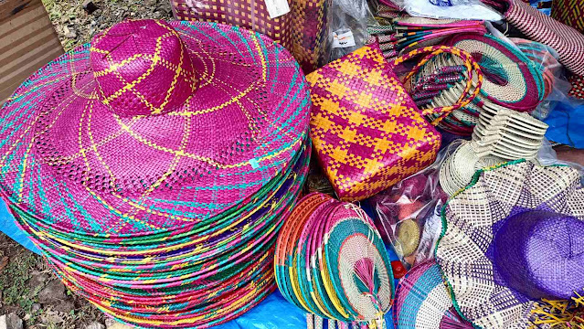
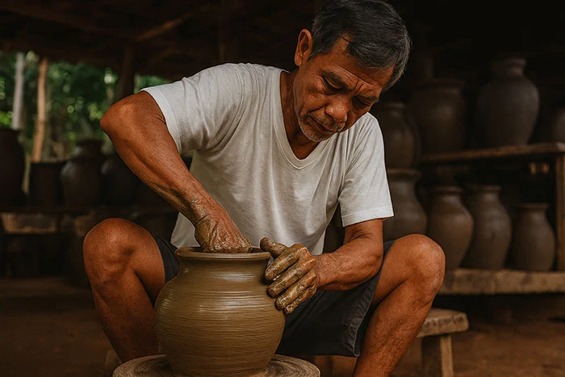
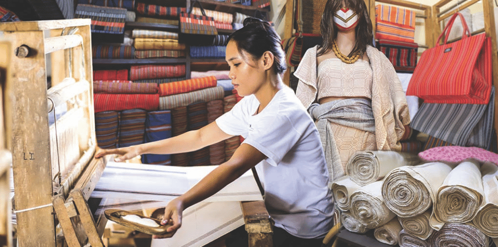
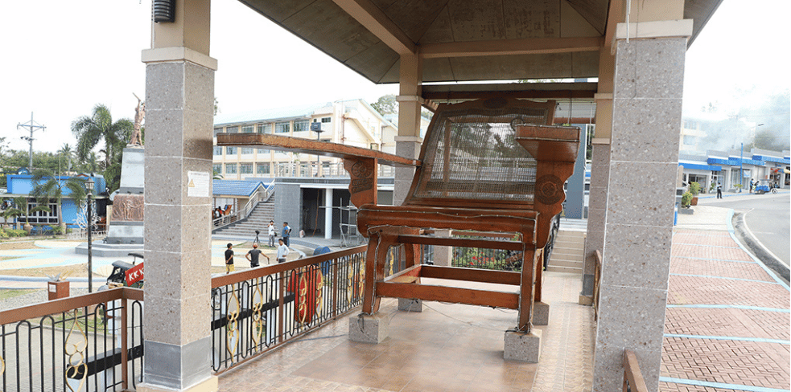

Sabutan
Sabutan refers to a type of pandan plant fiber woven by local artisans in Palanan, Isabela into colorful and durable handicrafts such as bags, hats, mats, fans, and placemats. These handcrafted items showcase traditional weaving skills and reflect the province’s creative heritage.

Banga
Banga are traditional large clay jars made by local potters in Isabela using native clay. Historically used for storing water, fermenting food, and cooking, these earthenware vessels are part of the province’s long‑standing pottery tradition.

Inabel
Inabel is a handwoven textile known for its soft, durable fabric and intricate patterns. Locally made using traditional looms, Inabel cloth is used for blankets, garments, bags, and home décor, embodying Filipino weaving heritage and craftsmanship.

Butaka Chair
The Butaka Chair is a classic Filipino wooden chair with wide armrests and a relaxed backrest, traditionally handcrafted by furniture makers in Isabela. Made from native hardwoods, it is both functional and artistic, symbolizing local craftsmanship and hospitality.